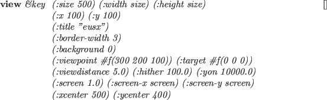

画面の上に描画するためには、4つのオブジェクトが必要である。
1つは描かれたオブジェクト、2つはviewing座標系と投影で定義されるviewing、
3つはNDCの中でのクリップ処理のためのviewportとNDCから物理的画面座標系への
変換、4つは
物理的ディスプレイデバイスの上に描画関数を実行するviewsurface。
viewerオブジェクトは、viewingとviewportとviewsurface
オブジェクトを持ち、
座標系変換を連続的に制御する。
15.5節に記述されるdrawとhid関数はviewerの
インスタンスを使用する。
viewer [クラス]
:super object
:slots (eye :type viewint)
(port :type viewport)
(surface :type viewsurface)
-
- viewingからviewportを経由してviewsurfaceへ移るCascaded Coordinatesの変換を定義する。
:viewing &rest msg [メソッド]
-
-
もし、msgが与えられたならば、msgはviewing(eye)オブジェクト
に送られる。そうでなければ、viewing(eye)オブジェクトが返される。
:viewport &rest msg [メソッド]
-
-
もし、msgが与えられたならば、msgはviewport(port)オブジェクト
に送られる。そうでなければ、viewport(port)オブジェクトが返される。
:viewsurface &rest msg [メソッド]
-
-
もし、msgが与えられたならば、msgはviewsurface(surface)オブジェクト
に送られる。そうでなければ、viewsurface(surface)オブジェクトが返される。
:adjust-viewport [メソッド]
-
-
viewsurfaceの大きさが変えられたとき、:adjust-viewportは
portに固有のメッセージを送ることによりviewportの変換を変える。
:resize width height [メソッド]
-
-
viewsurfaceに:resizeメッセージを送り、viewportに:sizeメッセージを送る
ことによりviewsurfaceの大きさを変える。
:draw-line-ndc p1 p2 &optional (do-clip t) [メソッド]
-
-
NDCの中に定義される2つの端点p1,p2を結ぶ線を描く。
:draw-polyline-ndc polylines [メソッド]
-
-
NDCの中に定義される端点を結ぶ多角形を描く。
:draw-star-ndc center &optional (size 0.01) [メソッド]
-
-
NDCの中に十字マークを描く。
:draw-box-ndc low-left up-right [メソッド]
-
-
NDCの中に四角形を描く。
:draw-arc-ndc point width height angle1 angle2 &optional color [メソッド]
-
-
NDCの中に円弧を描く。
このviewerに結び付くviewsurfaceオブジェクトは、:arcメッセージを
受けなければならない。
:draw-fill-arc-ndc point width height angle1 angle2 &optional color [メソッド]
-
-
NDCの中に塗り潰し円弧を描く。
:draw-string-ndc position string &optional color [メソッド]
-
-
NDCの中に定義されるpositionにstringを描く。
:draw-image-string-ndc position string &optional color [メソッド]
-
-
:draw-rectangle-ndc position width height &optional color [メソッド]
-
-
:draw-fill-rectangle-ndc point width height &optional color [メソッド]
-
-
:draw-line p1 p2 &optional (do-clip t) [メソッド]
-
-
ワールド座標系に定義される2つの端点p1,p2を結ぶ線を描く。
:draw-star position &optional (size 0.01) [メソッド]
-
-
ワールド座標系のposition位置に十字マークを描く。
:draw-box center &optional (size 0.01) [メソッド]
-
-
ワールド座標系のcenterに四角形を描く。
:draw-arrow p1 p2 [メソッド]
-
-
p1からp2へ向けての矢印を描く。
:draw-edge edge [メソッド]
-
-
:draw-edge-image edge-image [メソッド]
-
-
:draw-faces face-list &optional (normal-clip nil) [メソッド]
-
-
:draw-body body &optional (normal-clip nil) [メソッド]
-
-
:draw-axis coordinates &optional size [メソッド]
-
-
coordinatesで定義される軸をsizeの長さで描く。
:draw &rest things [メソッド]
-
-
3次元の幾何学オブジェクトを描く。
もし、オブジェクトが3次元ベクトルならば、その位置に小さな十字マークを描く。
もし、3次元ベクトルのリストであれば、多角形を描く。
もし、thingが:drawメッセージを受けたならば、
このviewerを引き数としてそのメソッドが呼び出される。
もし、オブジェクトが:drawnersメソッドを定義しているならば、
:drawメッセージは:drawnersの結果に送られる。
line, edge, polygon, faceおよびbodyオブジェクトは、
viewerに定義されている:draw-xxx(xxxにそのオブジェクトのクラス名が入る)
メソッドによって描かれる。
:erase &rest things [メソッド]
-
-
背景色でthingsを描く。
:init &key :viewing :viewport :viewsurface [メソッド]
-
-
viewing, viewportおよびviewsurfaceをこのviewerのスロット
eye, portとsurfaceに設定する。

-
- 新しいviewerを作り、*viewer*リストに置く。
2016-03-23